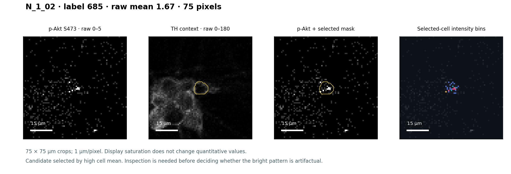
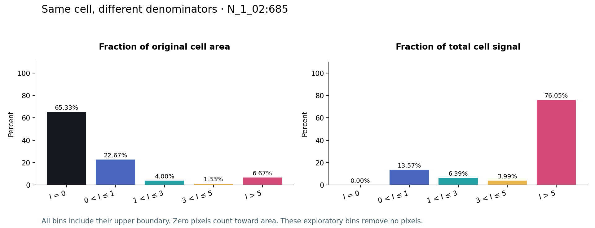
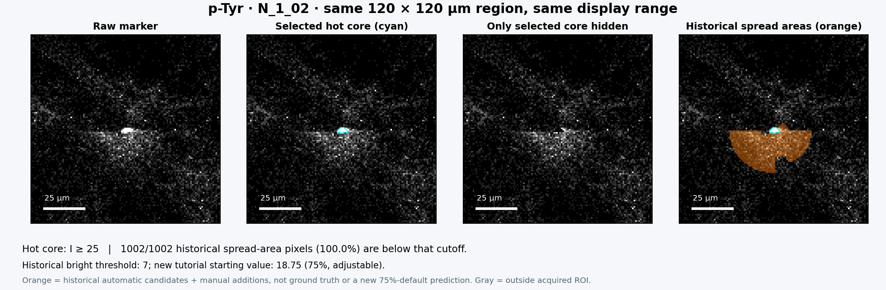
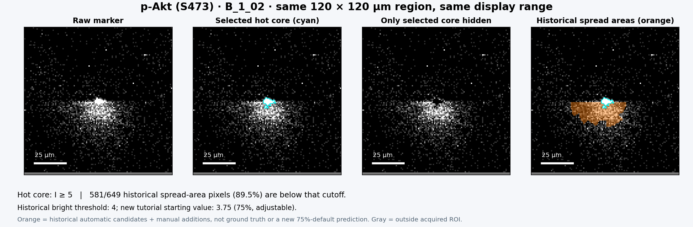
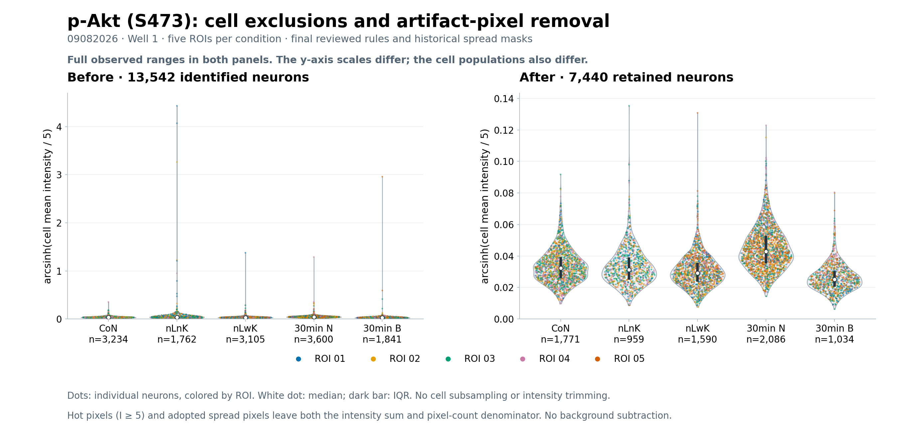
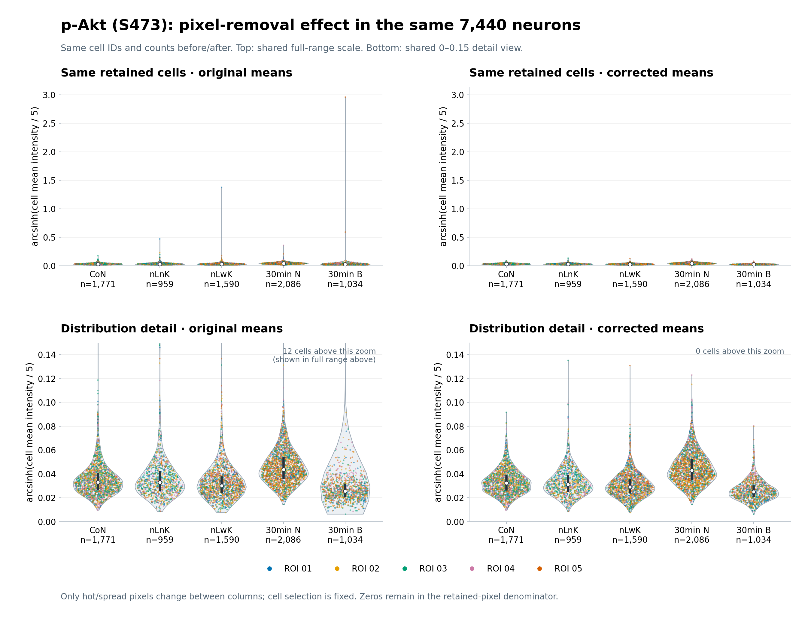
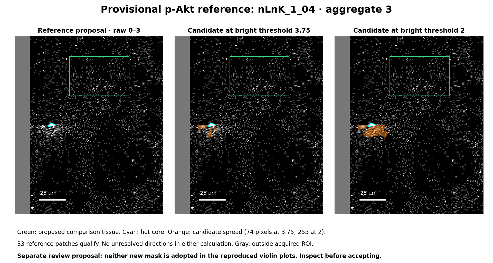

IMC hot pixel inspection & noise exclusion
Inspect the cell. Understand the pixels. Why is this cell’s marker intensity so high? Follow the pixels that drive its mean, inspect their spatial pattern, and record a marker-specific hot-pixel cutoff supported by review.
Author and pipeline lead: Yang Cheng · University of Virginia (UVA) · Christopher Deppmann and Melanie Worley laboratories.
Acknowledgments: Substantial technical assistance, mentoring, and materials from Eli Zunder’s laboratory.
Development contributor: ChatGPT (OpenAI), contributing to code, interface development, documentation, and tutorial construction.
Real 09082026 rat SCG images15 inspection markers + TH contextFive ROIs · 2,401 selected cells
Open the prepared reviewer →Open aggregate inspector →Open spread reviewer →Get the code & downloadsPrepare your own inputsExplore the prepared example directly on this website. For a downloaded copy, run python serve.py and open the printed address. Preparation dependencies are needed only to rebuild data. Export reviews before switching between the online site and a local copy; browser storage is separate for each address.
Try the supplied example
Open the reviewer, choose p-Akt (S473), then N_1_02. Start with the highest-mean cells. Inspect the four images before entering settings. The guide below explains what to measure and save.
You do not need an MCD file, segmentation environment, API key or original project folders.
Bring your own dataset
Supply quantitative TIFFs, matching labels, explicit channel mapping and pixel calibration. Use all labeled cells or supply a population table. The preparation script creates the measurements and reviewer.
Configuration template · Optional notebookGet the code
The source code is included here. Download the complete package to keep the scripts, interface, templates and example data together. For your own data, edit the configuration and CSVs, then run the preparation script; you do not need to edit the interface source.
Download tutorial + code + example dataBrowse the source code| Code / file | What to use it for | Open or download |
|---|---|---|
code/prepare_dataset.py | Main reusable script: read your TIFFs and metadata, validate inputs, measure cells, and generate your reviewer. | View code · Download Python |
interface/review.js | Browser logic for cell selection, intensity bins, signal contribution, settings and review export/import. | View code · Download JavaScript |
interface/index.html + review.css | Reusable reviewer layout and styling. Keep these beside review.js; the preparation script copies them into your output. | View HTML · View CSS |
Guided_Inspection.ipynb | Executed lesson showing input loading and direct pixel-contribution calculations on the included example. | Download notebook |
templates/ | Configuration, ROI/channel mappings and optional population selection for your data. | Configuration · ROIs · Channels · Cells |
requirements.txt + serve.py | Install preparation dependencies, then run the local guide and generated reviewer. | Requirements · Server code |
Run with your own images
Extract the ZIP and open a terminal in All_Marker_Tutorial/. Create and activate a Python environment as described in Build your review dataset. Copy templates/ to my_inputs/, replace its placeholders with your image/mask paths, channel mapping and calibration, then run:
python -m pip install -r requirements.txt
python code/prepare_dataset.py my_inputs/dataset.json --output results/my_review
python serve.pyOpen http://127.0.0.1:8788/results/my_review/. Inputs are the configuration and paired image/mask files; outputs are the cell measurements, validation/provenance records and working reviewer. See the exact input requirements.
Import the preparation function into an existing Python workflow
import sys
sys.path.insert(0, "code")
from prepare_dataset import prepare
catalog = prepare("my_inputs/dataset.json", "results/my_review")Run from the tutorial root. Use a new output directory for each prepared dataset version.
This is the version 0.1.0 tutorial release. The code covers preparation, cell/pixel inspection, aggregate inspection and guided noise-spread review; a reproducible p-Akt quantification example is included below, while general interactive final quantification remains to be built. Browse the GitHub repository or download the versioned release.
What must exist before you begin?
This pipeline starts after image extraction and segmentation. The same pixel grid must describe your marker channels and cell labels. A label ID identifies an object within an ROI; use ROI + label as its stable cell identity.
| File to prepare | Required content | How it is used |
|---|---|---|
| Quantitative TIFF image(s) | One 2D ROI, stored as CYX channels or separate YX channel TIFFs. Finite, nonnegative numeric intensities. | Measurements, raw-pixel inspection and exact image assets. Keep extraction/filtering history. |
| Label TIFF per ROI | YX integer labels on the image grid. 0 = unlabeled; positive IDs = segmented objects. Retain all objects, including cells outside the target population. | Cell boundaries, full-cell measurements and surrounding structures. |
| rois.csv | ROI ID, image path, mask path, axes, X/Y pixel size in µm. Condition and sample columns are optional metadata. | Pair images and masks; convert pixels to physical area and crop sizes. |
| channels.csv | Unique marker ID, readable marker name, channel/isotope identity and zero-based channel index. | Prevent accidental measurement of the wrong channel. Designate a context channel in the configuration. |
| cell_metadata.csv · optional | ROI, positive mask label and explicit include=true/false for every labeled object. | Choose the population being inspected; unselected cells remain visible as tissue. |
| dataset.json | Dataset name, table paths, optional population file/context marker, intensity provenance and mask semantics. | One portable entry point for preparation. |
Choose the correct quantitative image
Use the TIFF values you intend to measure. A contrast-adjusted screenshot, RGB rendering or 8-bit display export cannot replace the quantitative marker plane. Changing display brightness in the reviewer never changes the underlying values.
Record preprocessing rather than calling an image simply “raw.” In this example, Steinbock 0.16.3 extracted the original MCD data with HPF=50; there was no spillover correction or normalization. The teaching TIFFs preserve the selected quantitative channels exactly.
Describe what your masks represent
Whole-cell labels, nuclear labels and expanded nuclear regions measure different compartments. The example uses user-validated whole-cell analysis regions with unchanged nuclear-origin labels. State your own segmentation method and region definition explicitly; the software does not convert nuclear labels into whole cells.
The experiment and condition labels
The example comes from mass cultures of wild-type (WT) rat sympathetic neurons. DIV means days in vitro; DIV4.5 to DIV5 is a 12-hour interval. NGF is nerve growth factor, BDNF is brain-derived neurotrophic factor, and KCl is potassium chloride.
| Label in files and plots | Experimental condition |
|---|---|
| CoN | Continuous NGF: neurons maintained with NGF through DIV5. |
| nLnK | Trophic factor deprivation without KCl for 12 hours, from DIV4.5 to DIV5. Before DIV4.5, these neurons were maintained with 50 ng/mL NGF. |
| nLwK | Trophic factor deprivation with 12.5 mM KCl for 12 hours, from DIV4.5 to DIV5. |
| N / 30min N | After the 12-hour trophic factor deprivation with 12.5 mM KCl, treat with 100 ng/mL NGF for 30 minutes. |
| B / 30min B | After the 12-hour trophic factor deprivation with 12.5 mM KCl, treat with 200 ng/mL BDNF for 30 minutes. |
The ROI/file labels N and B appear as 30min N and 30min B in the violin plots. Each ROI is an acquired image region within its condition.
How the example was packaged
Five complete 1,000 × 1,000-pixel Well 1 ROIs represent CoN, nLnK, nLwK, N and B, at 1 µm per pixel in X and Y. The 15 inspection markers and TH were copied into a 16-channel stack without cropping, rescaling or changing labels. TH supplies morphology context. Existing neuronal assignments select 2,401 objects for review; the surrounding labeled cells remain in the mask images.
channel_index refers to the teaching stack. original_panel_index records the original 57-channel plane. The example includes cl. Casp3 for inspection; it was omitted in the later final signaling analysis. These views and cell numbers are not an estimate of segmentation accuracy or independent biological replication.
Build a reviewable dataset
Create an input folder
Copy templates/ to my_inputs/. Replace every example path, marker name, index and calibration. Paths in the CSVs are relative to my_inputs/dataset.json, not to the terminal’s current directory. Use letters, numbers, underscores, hyphens or dots for ROI and marker IDs.
For separate channel TIFFs, use the separate-image channel template: images/{roi}_marker_A.tif substitutes the ROI ID. Those images must be YX. Leave image_path blank in the ROI table if every channel uses this form.
Select all cells or a defined population
Keep "cells": null to review all labels. To restrict a population, set "cells": "cell_metadata.csv" and list every nonzero mask ID as true or false. Do not delete unselected cells from the label image. Set context_marker_id to a channel ID, or null if none is available.
For stacks, declare axes as CYX. A YX image has one channel, index 0. Z, time and RGB dimensions are not interpreted automatically: export the intended quantitative 2D channels first.
Install the preparation dependencies
In a terminal opened in this tutorial folder, use Python 3.10 or newer:
python -m venv .venvActivate on macOS/Linux:
source .venv/bin/activateWindows PowerShell: .venv\Scripts\Activate.ps1. Command Prompt: .venv\Scripts\activate.bat.
python -m pip install -r requirements.txtDependencies are NumPy and tifffile. This does not install segmentation models or Jupyter. The prebuilt reviewer needs only the standard-library server.
Prepare, check, then open
python code/prepare_dataset.py my_inputs/dataset.json --output results/my_review
python serve.pyOpen http://127.0.0.1:8788/results/my_review/. Keep the server terminal open. To reproduce the supplied example instead, use:
python code/prepare_dataset.py example/dataset.json --output results/reproduced_exampleOutputs must be new directories. This prevents a regenerated dataset from silently replacing a reviewed one.
Files generated for you
cell_marker_measurements.csv: one row per labeled cell and channel, with population flag, mean, sum, maximum, area and centroid.catalog.jsonanddata/: exact quantitative pixel arrays, labels, geometry and measurements used by the browser. Cell histograms are calculated from these pixels when inspected.validation.json: checks of dimensions, intensities, identifiers, calibration and population matching.input_provenance.json: input configuration and source/table hashes.index.html,review.jsandreview.css: the reusable cell browser.aggregates.html,aggregates.js,aggregates.css,aggregate_engine.js,aggregate_worker.js: aggregate inspection using the same catalog and arrays.
No pre-existing violin plot, measurement table, neurite mask, MCD file or neuron-classification algorithm is required. Preparation does not apply artifact exclusions.
Why is a high-mean cell high?
A high cell mean can result from distributed staining, a few extreme pixels, a bright deposit crossing its boundary, or an incorrectly placed mask. The review task is to examine which explanation is supported by the images.
Find cells worth inspecting
Choose a marker and ROI. The first list contains the top 5% of selected cells by original raw mean, rounded up. Ties use the label ID. These are screening candidates, not automatically excluded outliers. The ranked-mean plot shows the complete selected population; click a point to inspect it.
Check the mask and context
Inspect the marker alone, context with labels, marker with labels, and selected-cell intensity bins. Yellow outlines the cell being reviewed. Show all cell outlines in crop also displays neighboring cells: cyan for other included cells and magenta for cells outside the review population. In this example those correspond to other neurons and non-neuronal cells. Turn the option off to isolate the reviewed cell. The default High visibility mask style uses a solid yellow contour with a dark border. Choose Original · subtle for the previous half-transparent line. Colors follow the input population flags; the viewer does not infer cell type. Pink/magenta intensity-bin fills indicate the highest bin. A grayscale checkerboard means the crop extends outside the acquired ROI, not that those pixels had zero intensity. Hover to read quantitative values and source coordinates.
Assess mask placement separately from the bright-pixel pattern. A plausible mask can contain contamination. Use the shared or per-cell zoom controls and drag any image to pan all four panels together. Locate brightest pixel centers the view on the maximum within that cell. Crop size is available under additional display options.
Explore raw-intensity bins
For p-Akt S473, try display maximum 5, boundaries 1, 3, 5 and exploratory threshold 3. These are teaching settings, not a decision to remove signal. Apply them to reveal zero, (0,1], (1,3], (3,5], and >5 pixels. Every intensity belongs to exactly one bin, including equality at boundaries.
New markers start blank. Choose their ranges through inspection rather than reusing the p-Akt numbers. The auto-preview contrast can reveal an image before settings exist; its maximum is never saved as an accepted cutoff.
Ask how much each range contributes
Read both area fraction and signal fraction. A tiny bright region can occupy little of the cell while supplying most of its measured signal. Use Compare intensity bin to show its contributions beside those above the exploratory threshold. Expand Intensity range breakdown for the complete table. All measurements use the complete original mask, including zeros, regardless of crop, zoom or pan.
Bin contribution to mean = bin intensity sum / all cell pixels
Bin signal fraction = bin intensity sum / total cell intensity
The contributions of the disjoint bins sum to the original mean. The exploratory high-pixel row can overlap those bins; do not add it to them. A zero-total cell has an undefined signal percentage, displayed explicitly.
Look beyond the top means
Switch to High-pixel contribution. It lists remaining selected cells containing pixels strictly greater than your exploratory threshold, ranked by the percentage of their total signal supplied by those pixels. This catches suspicious contributions even when the cell’s mean does not reach the top 5%. With no threshold set, the supplementary list is empty.
Save what you actually judged
Record mask placement, bright-pixel assessment and a note explaining the spatial evidence. Edits save when you leave a field or select Save review beneath that cell. Opening or scrolling past a cell does not mark it reviewed. Reviews retain the exploration settings used when you saved them.
Inspect examples across relevant ROIs and experimental groups. Do not tune the cutoff merely to eliminate a group’s high tail; real biological responses can also create high means.
A few pixels can drive the mean
The panels below use an actual high-mean p-Akt S473 cell from the supplied N_1_02 ROI. They illustrate the relationship between spatial pattern and intensity contribution. This teaching cell is selected by rank, not presented as a validated artifact label.


Reproduce these figures with python code/build_teaching_figures.py after installing Matplotlib separately. The optional notebook demonstrates the same pixel accounting without requiring figure generation.
Exact teaching-cell metrics · Inspect the source pixels yourself
Record a working cutoff for each marker
After reviewing mask validity, brightest-pixel patterns and contribution across cells and ROIs, decide where you will draw the marker’s working hot-pixel boundary. Record the value, comparison operator and reasoning. Brightness alone does not prove artifact identity, and being below the boundary does not establish clean biological signal.
| Control | Question it answers | Changes the data? |
|---|---|---|
| Display maximum | How should quantitative intensity map to screen brightness? | No |
| Intensity-bin boundaries | Where do different intensity ranges occur, and what do they contribute? | No |
| Exploratory high threshold | Which cells depend on pixels with I > this candidate value? | No |
| Accepted working cutoff | Which boundary will the later hot-pixel stage use, and why? | Recorded here; applied in a later stage |
The early p-Akt prototype used I >5. The final all-marker workflow adopted I ≥ cutoff. At cutoff 5, a pixel equal to 5 is retained under the first convention and classified as hot under the second. The reviewer makes the operator explicit rather than letting a bin label decide it implicitly.
For the 09082026 final example, p-Akt S473 used 5 with the inclusive convention. That is historical context, not a preset or a universal maximum for p-Akt. All markers in this reviewer start without an accepted decision.
Keep decisions portable
Use Export all markers to download one JSON containing marker-specific exploration settings, accepted cutoff/operator/rationale, and saved cell assessments. Each review includes ROI, label ID, timestamp and settings at the time of inspection. The export identifies the exact prepared dataset.
Browser storage is convenient but belongs to a particular browser and address. Import the JSON to restore the matching dataset, keeping newer records. The export does not contain image arrays or replace the preparation folder. Keep the images, labels, CSVs, configuration, provenance, prepared data and review JSON together.
Changing images, masks, calibration, population flags or channel identities creates a different dataset identity. This prevents accidental transfer of decisions to different pixels. Renaming/moving an intact tutorial folder does not change the prepared identity.
The first two chapters produce an inspection record, not a final artifact-corrected intensity table. No statistical trimming, background subtraction or automatic cell deletion is performed.
Inspect connected hot-pixel aggregates
After examining outlying cells and recording marker-specific boundaries, inspect the connected deposits across the entire ROI, including areas outside cell masks. A component is a group of thresholded pixels connected through sides or corners (8-connectivity). No holes are filled, and components are not clipped to individual cells.
Open the aggregate inspector →catalog.json, quantitative data/*.f64.gz, labels data/*_labels.u32.gz, calibration and population assignments; plus working marker cutoffs and their comparison operators. Use Use saved cell-review cutoffs in the same browser/address, or Import cell-review JSON after moving to another browser. There is no additional TIFF conversion or aggregate CSV to generate.- Choose a marker and ROI. Import your recorded cutoffs or enter an exploratory value. The teaching dataset also offers Explore 09082026 example settings, which loads the historical 14-marker set (excluding cl. Casp3 and the TH context channel). These values are starting examples, not universal biological limits. This snapshot uses the final historical p-ATM cutoff of 100; earlier exploratory production pages used 30.
- Find a deposit. The overview shows the entire acquired ROI and marks hot-pixel aggregate positions with numbered cyan boxes. Each gallery row below shows four views of a crop initially centered on the corresponding aggregate. Click a box or use Jump to aggregate to open its crop. The gallery sorts complete components from largest to smallest and displays 25 per page. A minimum of 20 pixels narrows the gallery to large components without changing calculations.
- Compare four views. Inspect raw marker, context plus masks, marker plus masks, and intensity bins across the entire crop. Zoom and drag-to-pan stay synchronized within a row. Locate brightest pixel centers its actual raw maximum. All neighboring cell outlines are available, including cells outside the selected population.
- Inspect spatial relationships. Each nearby-cell row reports overlap, shortest full-mask gap, full area, remaining non-hot area and count-based flags. Click a cell row to highlight its contour and draw the measured gap. Distances use the shortest edge-to-edge gap between calibrated pixel squares; overlapping or touching masks have zero gap. The table radius only controls which cells are listed.
- Review the analysis rules. Open Analysis rules and marker set. Missing cutoffs make the cross-marker check pending; a partial count is a lower bound, never an automatic pass. Cell colors indicate computed flags and supplied population membership, not new neuron/non-neuron predictions.
- Save and export. Notes autosave on leaving the field or selecting Save note. Export all markers or the selected marker, and download the current ROI cell-flag audit. Notes remain linked to marker, ROI, cutoff, operator and component anchor. Returning to the same cutoff restores its notes. Editing aggregate settings does not overwrite Chapter 2 decisions.
Original example rules, now adjustable
| Rule | Starting value and exact boundary |
|---|---|
| Small / large component | Small <20 pixels; large ≥20 pixels, measured across the full ROI. |
| Full cell size | Flag included cells with area <120 µm². |
| Small-component burden | Flag >10 hot pixels summed across all small components inside a cell for the current marker. |
| Across-marker burden | Flag when the small-component burden exceeds 10 in ≥4 selected markers. Every required marker needs a cutoff for a complete assessment. |
| Large-component proximity | Flag full cell masks with shortest gap <10 µm to any large component; exactly 10 µm is retained. |
| No remaining pixels | Flag cells with no pixels left after removing current-marker hot pixels. |
Aggregate-view colors: cyan = selected aggregate; yellow = included cell with no computed size/count/gap flag; purple = included cell with a size/count or no-pixels flag; green = large-component proximity when size/count checks pass; magenta = outside the review population. In this example, included cells are neurons. Yellow can still have a pending cross-marker assessment: inspect the table and completeness message.
Files you keep
imc-aggregate-review-*.json contains exploratory cutoffs, selected marker set, rules, display settings and notes. imc-aggregate-audit-MARKER-ROI.json contains each cell’s counts, remaining area, flags and assessment completeness for that ROI/marker. Backups contain metadata and notes, not image arrays. Import validates the dataset and keeps newer notes; the newer backup restores its marker settings and shared rules. Keep both exports alongside the prepared data and original Chapter 2 decisions.
No cells are deleted, raw images remain unchanged and no corrected per-cell intensity is produced yet. Continue to Chapter 4: noise-spread review before final retained-pixel quantification.
Browse the interface code · Browse the numerical engine · Browse the background worker
Why hot-pixel removal alone can miss noise
A deposit can have a very bright center and a weaker surrounding halo or streak. The center may exceed the marker’s hot-pixel cutoff, while surrounding contamination falls within intensity ranges also occupied by plausible biological staining. Removing only the hot pixels can leave that surrounding signal in the cell measurement. Lowering the hot cutoff everywhere can remove genuine signal too.
Intensity alone cannot settle the distinction. Inspect the spatial pattern, its relationship to a deposit, the comparison tissue and nearby biological structures. These examples were annotated for spread review in the original experiment; they demonstrate the problem, not a universal visual test of artifact identity.


Two thresholds with different jobs
| Control | What it does |
|---|---|
| Hot-core cutoff | Defines the connected deposit being inspected, using the saved ≥ or > operator. |
| Bright-pixel threshold | Counts how common bright pixels are in the surrounding tissue and the reference. It starts at 75% of the hot-core cutoff and is adjustable. Counting uses I ≥ bright threshold. |
| Display maximum and intensity bins | Change how you see the image. They do not define the core or spread mask. |
For a hot cutoff of 100, the starting bright threshold is 75. That is a starting comparison value, not a claim that 75 is a biological limit. Inspect the image and profiles and change it when appropriate. Saved reviews retain their applied values; the “Set to 75%” button prepares the new value, and Update analysis applies it.
How the prediction works, in plain language
- Choose the deposit. Follow an “Inspect noise spread” link from Chapter 3, or select a marker, ROI and aggregate. Include small deposits when their surroundings look suspicious.
- Draw a fair comparison area. Choose nearby tissue that looks free of this deposit’s spread and is appropriate to compare with it. It can contain biological structures and zeros. The drawing is your scientific judgment; the tool does not automatically find a clean region. Avoid the core and obvious contamination.
- Learn what is usual in that area. The tool divides your drawing into small patches and measures the percentage of bright pixels in each. It uses their usual range, with a little extra allowance, so one unusually bright patch does not dictate everything.
- Look for an excess beside the core. Sixteen directions are checked independently. If bright pixels are more common near the core than in the reference, that direction becomes a candidate. Spread can therefore extend farther in one direction than another.
- Follow it outward. The tool checks successive distance bands. It looks for two adequately sampled bands in a row that fit the reference range and have a lower pooled bright fraction than near the core. The proposed endpoint is the beginning of those bands. A later sustained rise invalidates that endpoint; an isolated later rise is flagged.
- Propose an area, then review it. Every acquired non-core pixel before a resolved endpoint enters the candidate area, including weak pixels. The mask is a spatial area, not merely another intensity threshold. Check whether it overlaps genuine structures, add missed wedge/ring areas manually, and record your decision.
Nonzero-pixel density is shown as supporting information; it does not veto a candidate or endpoint. Biological/background masks do not set the boundary. This portable viewer reports overlap with the supplied cell labels; it does not infer neurites or silently equate unlabeled tissue with background.
Default settings and exact boundary rules
16 clockwise wedges; 5 µm ring spacing; 60 µm search radius; initial evidence pooled within 10 µm. Reference patches are 10 × 10 µm, with at least 10 selected acquired pixels per patch and eight qualifying patches. The central 90% patch range is widened by five percentage points, clipped to 0–100%. A ring/wedge needs at least 15 acquired pixels and 50% acquired coverage. Two consecutive compatible rings confirm a proposed endpoint; two later consecutive excess rings invalidate it. Compatibility means within the reference interval, not simply below its upper bound.
Distances are measured from a sampled pixel’s center to the nearest core-pixel square edge, with the prepared X/Y calibration. Core pixels are excluded from surrounding profiles; all other acquired pixels, including zeros and cells, contribute. Padding outside the ROI does not contribute. Reference patches follow a grid in the current crop; changing search radius can shift that grid and requires renewed review. Reference drawings and manual pixels remain fixed in source-ROI coordinates.
Use the reviewer
Open noise-spread reviewer →Use the same Chapter 1 prepared folder, including catalog.json, calibrated quantitative arrays and label arrays. Import a matching Chapter 2/3 decision JSON if your cutoffs are in another browser. No new measurement CSV, biological mask or background mask is required. The preparation script now copies spread.html, spread.js, spread.css, spread_engine.js and spread_worker.js into every prepared output.
- Load the aggregate and inspect the four synchronized views: raw marker, selected core hidden, intensity bins, and context with spread overlays.
- Draw reference polygons or freehand regions. Green patch boxes qualify; red ones contain too few selected pixels. Check the reference/core overlap message.
- Apply the bright threshold and any advanced settings. Examine directional plots and the status table.
- Use manual grid selection to add or remove manual wedge/ring selections. Manual additions appear blue; automatic candidates orange; unresolved candidate directions have purple hatching. Unresolved shading shows a search area, not a confirmed extent.
- Record a review decision and reasoning. Editing analysis inputs resets that decision. Accepted areas and unresolved directions remain distinct.
What to save and what remains unfinished
Export review backup keeps settings, drawings, manual source pixels and notes for all saved reviews. Export current review + masks writes the selected aggregate’s measurements and mask layers. Export all saved reviews + masks recalculates saved entries only; it is not proof that every aggregate has been reviewed. Records with missing reference data or unresolved directions retain those states.
Mask indices use the complete source ROI: x = index % width, y = floor(index / width), starting at zero. Automatic candidates, manual additions, combined candidates, accepted areas, unresolved areas and hot cores are exported separately. Overlapping accepted masks must be unioned downstream. A human “no additional spread” decision does not turn an algorithm’s missing reference into a successful prediction.
No final correction happens here. Original images and cell masks remain unchanged. A frozen-input p-Akt reconstruction is available in the worked quantification example; general interactive final quantification remains the next chapter. Prediction code · Interface code.
What changes after cell and pixel exclusions?
This example recomputes p-Akt S473 across all 25 Well 1 ROIs, using the frozen neuronal assignments, final reviewed cutoffs and adopted historical spread masks. The regular teaching viewer contains five of those ROIs. The current aggregate engine recomputes the rules from quantitative pixels; the current spread engine reproduces the saved automatic/manual masks at their historical settings.

Separate cell selection from pixel correction
The largest change in cell count is the original-mask size rule: 6,088 cells fall below 120 µm². Another 2 first fail the cross-marker burden rule, 10 fail large-aggregate proximity and 2 fail spread-overlap review. Among the 7,440 retained cells, removing 1,298 pixels changes 940 means. Spread removal changes two retained means beyond hot-pixel removal alone. Do not attribute the entire visual difference to noise-spread removal.

Exactly what determines the result?
- Marker cutoffs define hot pixels and connected cores. p-Akt uses I ≥5. Small components have fewer than 20 pixels; large components have at least 20. The 14-marker set is evaluated only to determine the global small-hot-burden rule; p-Akt is the only plotted outcome.
- Cell geometry and hot-pixel burden determine eligibility. Exclude area <120 µm²; >10 small-component hot pixels in at least four markers; >10 small-component hot pixels for p-Akt; or an original-mask gap <10 µm to a large p-Akt aggregate.
- Adopted spread masks add spatial exclusions. Union automatic and manual masks in source-ROI coordinates. Exclude a cell when spread overlaps >20% of its original mask. Overlapping masks count once. Unresolved shading is not automatically used.
- Retained pixels determine the new mean. Remove the union of hot and adopted spread pixels from both the intensity sum and pixel count. Keep remaining zeros. A cell with no pixels left has no valid corrected mean. Apply arcsinh(mean / 5) only after calculating the cell mean.
Optional follow-up: a draft reference for the unfinished p-Akt review
We visually inspected the nLnK_1_04 deposit and selected comparison tissue above/right of it. The draft provides 33 qualifying reference patches. Bright thresholds of 3.75 (75% default) and 2 yield 74 and 255 candidate pixels, respectively. Neither overlaps a retained neuron; neither mask is adopted in the reconstruction. This remains a review proposal, not a confirmed clean reference or accepted artifact boundary.

Download the unreviewed reference draft. Import it using “Import spread backup” in the regular tutorial spread viewer, then choose p-Akt S473, nLnK_1_04 and aggregate 3. It does not contain an accepted mask. Retained-cell overlap check.
Validation: every one of the 13,542 cell records matches the finalized historical audit in cell identity, rule outcomes and numerical measurements. Independent source-pixel checks confirm the remaining counts, sums and transforms. This is one well with five ROIs per condition; no independent biological-replication or significance claim is made.
Get the data, code and reproducible result
Main figure PDF · Main figure SVG · Same-cell comparison PDF · All-cell audit CSV · Validation report · Detailed methods and reproduction

Download full 25-ROI reconstruction inputs + code
This separate package includes all marker arrays needed for the cross-marker eligibility rule. The main tutorial download contains the figures, audit and code, plus its original five-ROI teaching dataset. The full-input package is needed to recompute this 25-ROI example.
node code/verify_frozen_spread.cjs spread_inputs
node code/quantify_marker.cjs prepared/catalog.json quantification_config.json frozen_spread_masks.json results_new
python -m pip install -r requirements_plot.txt
python code/plot_quantification_example.py results_new/cell_audit.csv figures_newRun from the extracted reconstruction folder. Quantification code · Plotting code. The general interactive final-quantification chapter and acceptance/export workflow remain to be built.
Summarized pipeline logistics
Follow the labeled arrows to see which inputs determine each result. The workflow branches into parallel tracks: original cell-mask area, hot-pixel analysis and reviewed noise spread masks meet at cell exclusion and final quantification. Cell masks define where cells are measured; hot-pixel masks and adopted noise spread masks define which pixels are excluded.
Open full-size workflow ↗ · Download SVG

Read the six steps and their direct inputs
Prepare the inputs
Quantitative marker images, original cell masks, cell-population labels and pixel calibration.
Input requirements →For each marker channel, inspect cell masks and the pixel intensity bins
Inspect cell-mask placement and the spatial pattern of marker intensity. Record the marker’s hot-pixel cutoff and comparison operator.
Cell and pixel inspection →Inspect hot-pixel aggregates
Group hot pixels connected by edge or corner contact (8-connectivity). Count small-aggregate hot pixels inside each original cell mask and measure cell-mask distance to large aggregates.
For the cross-marker rule, count how many selected marker channels exceed the per-cell small-aggregate hot-pixel limit. This assessment needs the required markers’ cutoffs and counts.
Aggregate inspection →Predict and review noise spread masks
Draw reference regions, adjust the bright-pixel threshold, inspect predicted noise spread masks, and adopt reviewed noise spread masks.
The bright-pixel threshold starts at 75% of the hot-pixel cutoff and is adjustable. An absent prediction or an unresolved direction is not evidence of clean tissue.
Noise spread review →Determine which cells to exclude
Evaluate original cell-mask area; small-aggregate hot-pixel counts within cell masks; the number of marker channels exceeding that count limit; cell-mask distance to large aggregates; and cell-mask overlap with adopted noise spread masks.
From step 1 · cell-mask areaFrom step 3 · counts and distancesFrom step 4 · noise spread overlapRecalculate marker intensity for retained cells
Within each retained original cell mask, exclude the union of hot pixels and pixels covered by adopted noise spread masks. Compare distributions and save the exclusion audit.
From step 1 · original images + cell masksFrom step 3 · hot-pixel maskFrom step 4 · adopted noise spread masksFrom step 5 · retained cell identitiesCorrected mean = remaining intensity sum ÷ remaining pixel count
Count overlapping exclusions once. Keep remaining zeros. A cell with no remaining pixels has no valid corrected mean.
p-Akt worked result →
What needs repeating when a decision changes?
| If you change… | Revisit… |
|---|---|
| Images, cell segmentation or pixel calibration | All affected downstream measurements and reviews. |
| A marker’s hot-pixel cutoff or comparison operator | That marker’s aggregates, affected noise spread reviews, cell exclusions and corrected measurements; also the cross-marker count assessment. |
| Reference regions or the bright-pixel threshold | Predict and review the noise spread masks again, then update affected cell exclusions and corrected measurements. |
| Minimum original cell-mask area | Cell eligibility and final comparisons. The hot-pixel and noise spread masks do not need to change. |
| Display brightness, zoom or inspection bins | Visualization only. These controls do not change numerical measurements or the recorded hot-pixel cutoff. |
Definitions and configurable settings in the worked example
| Quantity | Meaning and example rule |
|---|---|
| Hot-pixel aggregate | A connected group of hot pixels with edge or corner contact. Small aggregates contain <20 pixels; large aggregates contain ≥20 pixels. A gallery display minimum is a separate setting. |
| Original cell-mask area | Full original mask area, before pixel exclusion. The example excludes cells with area <120 µm². |
| Small-aggregate hot-pixel count | Total hot pixels inside a cell mask that belong to small aggregates, summed across those aggregates. The marker-specific example rule excludes a cell with >10 such pixels. |
| Cross-marker count | Number of selected marker channels with >10 small-aggregate hot pixels inside that cell mask. The example excludes cells reaching ≥4 channels. |
| Distance to a large aggregate | Shortest edge-to-edge distance from the original cell mask to a large aggregate. Overlap or contact gives zero distance. The example excludes cells at <10 µm. |
| Noise spread overlap | Percentage of the original cell mask covered by the union of adopted noise spread masks. The example excludes cells at >20% overlap. |
Available now: Steps 1–4 have interactive review interfaces. Steps 5–6 are demonstrated by the reproducible p-Akt command-line example; their general interactive workflow is still pending.
Troubleshooting
The images do not load
Start python serve.py and use the printed http://127.0.0.1 address. The reviewer fetches local data and cannot run from a file:// URL. Keep its terminal open. Use another port if necessary, and export before switching ports. A browser without DecompressionStream support cannot load these assets.
The preparation script rejects my inputs
Read the specific error. Check CSV column names, relative paths and zero-based channel indices. Confirm the TIFF really has the declared CYX/YX layout, masks have positive integer IDs, calibration is positive, and every object has a population-table row if one is supplied. Align images/masks upstream; do not resize masks just to silence a shape error.
The image looks saturated or unexpectedly dark
The auto-preview maximum is based on positive ROI pixels. Set a suitable display maximum and inspect the hover values. Display contrast does not define a cutoff. If the structures are wrong, verify marker mapping and image orientation.
The bin view or supplementary list is empty
Enter one positive boundary in each of the three bin fields, in strictly increasing order, and select Apply settings. The supplementary list also needs an exploratory high threshold and cells containing pixels strictly above it. It excludes cells already in the top-5% list.
I cannot import an old production annotation file
This tutorial uses an explicit cutoff-decision schema and its own dataset identity. It accepts its own matching exports. Existing 09082026 production annotations are not automatically copied or modified.
I need background subtraction or a spread mask
Spread review is available in Chapter 4; background subtraction is not implemented. Preserve original quantitative images. A cutoff can identify extreme pixels without accounting for all lower-intensity spread. Do not treat an empty spread mask as evidence of a clean image.
Terms used in this guide
| Raw mean | Mean of the quantitative input pixels inside the full original cell mask, including zeros. |
|---|---|
| Hot pixel | A pixel classified by the recorded marker-specific working intensity cutoff and comparison operator. |
| Aggregate | A connected component of hot pixels; its spatial relationships are examined in Chapter 3. |
| Signal contribution | The fraction of a cell’s total intensity supplied by a specified set of pixels. |
| Context channel | A channel used to inspect morphology and label placement; it does not enter the selected marker’s intensity calculation. |
| ROI | An acquired image region. Labels are local to its coordinate grid. |
| Working cutoff | A documented dataset-specific review decision, subject to reassessment with additional evidence. |
From hot-pixel decisions to final measurements
- Interactive final quantification: union artifact masks, apply global/marker-specific exclusions, remove contaminated pixels from numerator and denominator, and retain complete audit records.
The p-Akt command-line example above already demonstrates the calculation. The next chapter will connect accepted review exports to an interactive quantification workflow for other datasets.